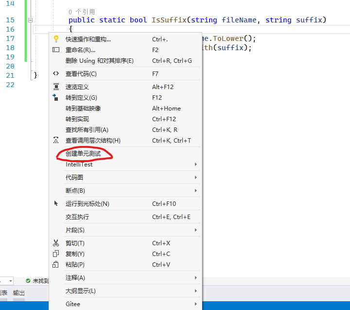

通过单元测试，开发人员可以快速查找项目中各个类的方法中的逻辑错误，经常运行单元测试，确保代码正常运行，可以在客户之前找到错误和缺陷。
在此讲下如何在VS中创建单元测试。
手动创建单元测试
在VS中，打开要测试的项目。在此，以
CslaFastStart中的PersonDal为例1
2
3
4
5
6
7
8
9
10
11
12
13
14
15
16
17
18
19
20
21
22
23
24
25
26
27
28
29
30
31
32
33
34
35
36
37
38
39
40
41public class PersonDal
{
// this is our in-memory database
private static List<PersonDto> _list = new List<PersonDto>();
public PersonDto Create()
{
return new PersonDto { Id = -1 };
}
public PersonDto GetPerson(int id)
{
var entity = _list.FirstOrDefault(_ => _.Id == id);
if (entity == null)
throw new Exception("Index not found");
return entity;
}
public int InsertPerson(PersonDto data)
{
var newId = 1;
if (_list.Count > 0)
newId = _list.Max(_ => _.Id) + 1;
data.Id = newId;
_list.Add(data);
return newId;
}
public void UpdatePerson(PersonDto data)
{
var entity = GetPerson(data.Id);
entity.FirstName = data.FirstName;
entity.LastName = data.LastName;
}
public void DeletePerson(int id)
{
var entity = GetPerson(id);
_list.Remove(entity);
}
}在方法上右击，选择
创建单元测试。
弹出创建单元测试对话框

点击确定，会自动创建一个测试项目，并添加对应方法的一个单元测试
1
2
3
4
5
6
7
8
9
10
11
12namespace DataAccessLayer.Tests
{
[]
public class PersonDalTests
{
[]
public void GetPersonTest()
{
Assert.Fail();
}
}
}我们可以修改这个单元测试来对方法
IsSuffix进行测试1
2
3
4
5
6
7
8
9
10
11
12namespace DataAccessLayer.Tests
{
[]
public class PersonDalTests
{
[]
public void GetPersonTest()
{
Assert.IsNull(new PersonDal().GetPerson(1));
}
}
}运行单元测试
如果只是要运行着一个单元测试，我们可以直接在单元测试方法上右击，选择
运行测试即可单独运行一个单元测试，或者在测试资源管理器(在顶部菜单中选择“测试”->“测试资源管理器”打开)中选中你要运行的单元测试，然后右击，选择运行。如果是要运行全部的单元测试，可以在
测试资源管理器中单击全部运行，来运行所有的单元测试。测试完成后，测试通过的会又绿色复选标记，红色的
X图标表示测试失败。IntelliTest当方法中又多个分支语句的时候，我们需要写多个单元测试，然而这些测试中很多代码都是一样的，每次都要做相同的
arrange，相同的action，甚至相同的assert，这时，IntelliTest就派上用场了IntelliTest的前身是微软研究院的白盒测试框架Pex，在VS2015 RC版本发布的时候，继承到了VS中，成了IntelliTest。IntelliTest可以做什么呢？IntelliTest通过探测你的.Net代码，自动生成一组高覆盖率的测试用例。还是用刚才的方法，我们在方法上右击，选择”
IntelliTest“->”创建IntelliTest“，弹出”创建IntelliTest“对话框
点击确定，会新建一个测试项目，并创建对应的测试方法。
1
2
3
4
5
6
7
8
9
10
11
12
13
14
15
16
17
18
19
20
21
22
23
24
25
26
27
28
29
30
31
32
33
34
35
36
37
38
39
40
41
42
43
44
45
46
47
48
49
50
51
52
53namespace DataAccessLayer.Tests
{
/// <summary>此类包含 PersonDal 的参数化单元测试</summary>
[]
[]
[]
[]
public partial class PersonDalTest
{
/// <summary>测试 Create() 的存根</summary>
[]
public PersonDto CreateTest([PexAssumeUnderTest]PersonDal target)
{
PersonDto result = target.Create();
return result;
// TODO: 将断言添加到 方法 PersonDalTest.CreateTest(PersonDal)
}
/// <summary>测试 DeletePerson(Int32) 的存根</summary>
[]
public void DeletePersonTest([PexAssumeUnderTest]PersonDal target, int id)
{
target.DeletePerson(id);
// TODO: 将断言添加到 方法 PersonDalTest.DeletePersonTest(PersonDal, Int32)
}
/// <summary>测试 GetPerson(Int32) 的存根</summary>
[]
public PersonDto GetPersonTest([PexAssumeUnderTest]PersonDal target, int id)
{
PersonDto result = target.GetPerson(id);
return result;
// TODO: 将断言添加到 方法 PersonDalTest.GetPersonTest(PersonDal, Int32)
}
/// <summary>测试 InsertPerson(PersonDto) 的存根</summary>
[]
public int InsertPersonTest([PexAssumeUnderTest]PersonDal target, PersonDto data)
{
int result = target.InsertPerson(data);
return result;
// TODO: 将断言添加到 方法 PersonDalTest.InsertPersonTest(PersonDal, PersonDto)
}
/// <summary>测试 UpdatePerson(PersonDto) 的存根</summary>
[]
public void UpdatePersonTest([PexAssumeUnderTest]PersonDal target, PersonDto data)
{
target.UpdatePerson(data);
// TODO: 将断言添加到 方法 PersonDalTest.UpdatePersonTest(PersonDal, PersonDto)
}
}
}这个方法中只有对原方法的调用，并没有实际的测试用例，我们在测试方法上右击，选择”运行
IntelliTest”，VS会弹出“IntelliTest研究结果”窗口
在里面我们可以看到，
IntelliTest为我们生成了9个用例，其中4个通过，5个失败，并且给出了失败的原因。点击每一条用例，在右侧有此用例更加详细的信息（包括详细的参数和调用堆栈），便于我们跟踪分析错误原因。
虽然
IntelliTest给我们自动生成了一批用例，但是并不能保证所有测试的代码覆盖率，我们可以在测试资源管理器中选中测试，右击选择分析代码覆盖率，VS会打开代码覆盖率结果，里面列出了测试方法所覆盖到的代码的层次结果及覆盖情况

你可以展开分支，查看所有没有被覆盖的分支逻辑，然后手动添加对应的单元测试

图中红色部分就是单元测试未覆盖到的地方，需要手动添加单元测试